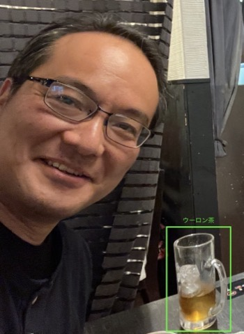

伊藤 孝行
博士（工学）
お知らせ
主な論文
アフガニスタンにおいて、異なる民族の参加者が会話型AIエージェントのファシリテーションのもとでオンライン議論を行うフィールド実験を実施。参加後に民族間の偏見と不安が低減することを示し、AIが仲介するオンライン接触（e-contact）が紛争影響下の社会における和解を支援しうることを実証した論文です。
大規模なオンライン議論を生産的に保つ「自動ファシリテーションエージェント」を提案。議論の論点構造を読み取り、論点・アイデア・根拠の投稿を促すファシリテーション発言を自動で行います。実際の市民議論に導入された実績を持ち、AIが群衆の合意形成を支援できることを示した論文です。
複数の論点が相互依存し、効用が非線形になる交渉問題を対象に、従来の線形手法では扱えない状況に対応する交渉プロトコルを提案。各エージェントが自身の効用空間から高効用の領域を探索して入札し、仲介者が社会的厚生を最大化する組合せを求めます。ACAN・ANAC につながる「複雑な自動交渉」研究の出発点となった論文です。
入札者の評価値が他の入札者の私的情報に依存する「相互依存価値オークション」を対象に、Contingent Bids モデルを具体的かつ計算可能なオークション設計として実現し、正直な入札が支配戦略となることを示した論文。理論モデルを実用的なメカニズム設計へ橋渡ししました。投稿553件の中から最優秀論文賞に選ばれています。
略歴
| 1972年5月1日 | 愛知県（現・北名古屋市）生まれ |
| 1995年3月 | 名古屋工業大学 工学部 知能情報システム学科 卒業 |
| 1997年3月 | 同大学院 工学研究科 電気情報工学専攻 博士前期課程 修了 |
| 1999年1月 | 日本学術振興会（JSPS）特別研究員（DC2）採用 |
| 2000年3月 | 同大学院 博士後期課程 修了、博士（工学）取得 |
| 2000年4月〜2001年1月 | 南カリフォルニア大学 情報科学研究所（USC/ISI）、Milind Tambe教授（現ハーバード大学）研究グループにて客員研究員 |
| 2001年4月〜2003年3月 | 北陸先端科学技術大学院大学 知識科学教育研究センター 助教授 |
| 2003年4月〜2006年3月 | 名古屋工業大学大学院 工学研究科 情報工学専攻 助教授 |
| 2005年3月〜2006年2月 | ハーバード大学 Division of Engineering and Applied Science、David C. Parkes教授研究グループ 客員研究員 |
| 2005年9月〜2006年2月 | MIT Center for Coordination Science（現 Center for Collective Intelligence）、Thomas Malone教授研究グループ 客員研究員 |
| 2006年4月〜2014年3月 | 名古屋工業大学大学院 工学研究科 准教授 |
| 2008年9月〜2010年3月 | MIT Center for Collective Intelligence、Thomas Malone教授・Mark Klein博士研究グループ 客員研究員 |
| 2014年4月〜2020年9月 | 名古屋工業大学大学院 工学研究科 教授 |
| 2020年10月〜現在 | 京都大学大学院 情報学研究科 社会情報学専攻 教授 |
| 2022年9月〜2025年8月 | University of Wollongong（オーストラリア）Honorary Professor |
| 2023年10月〜現在 | 日本学術会議 連携会員 |
| 2024年10月〜現在 | 広州大学（中国）Adjunct Professor |
研究テーマ
背景：人工知能（AI）、分散AI、マルチエージェントシステム
最近ずっと考え続けている疑問：「人々はなぜ合意形成できるのか？」「合意とは何だ？」
受賞歴（抜粋）
連絡先
所在地
〒606-8501
京都市左京区吉田本町
京都大学大学院 情報学研究科
社会情報学専攻 社会情報ネットワーク講座
合意情報学分野
総合研究7号館 424号室
お問い合わせ
TEL: 075-753-4821（直通）
TEL（Mobile）: 080-8393-2632
FAX: 075-753-4820（直通）
Email: ito [at] i.kyoto-u.ac.jp
🔬 研究室ホームページ
📄 CV（PDF）ダウンロード